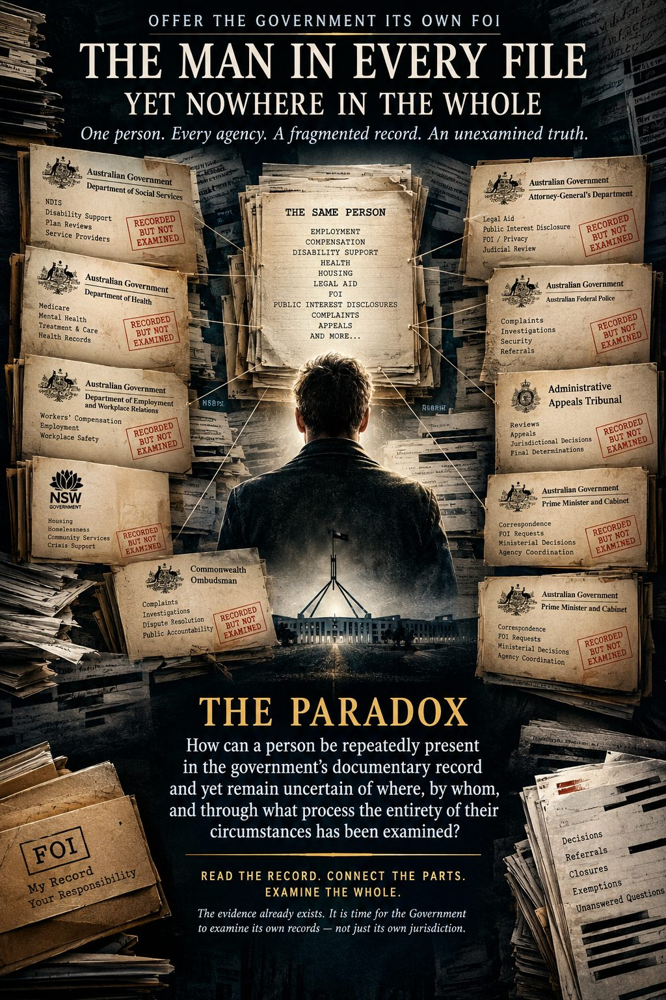

One person. Multiple institutions. A fragmented documentary history. An unresolved question: who has examined the whole?
- I offer the Government its own Freedom of Information record of me.
Not as a supplicant asking the same institutions to accept my account on assertion alone, but as the person whose circumstances are documented across their records— and who now asks those institutions to examine what they have recorded, decided, disclosed, withheld, referred, declined or left unresolved.
Put the person back at the centre of the documentary record.
For the purpose of this examination, let every relevant department, authority, tribunal, oversight body and service be considered in relation to its own documents, its own decisions, its stated responsibilities and its correspondence concerning me. Let each record be read not only in isolation, but also in the context of the other records to which it relates.
If my circumstances are insignificant, let the evidence demonstrate that. If the history is fragmented across jurisdictions, assemble the fragments. If one decision relies upon an earlier determination, identify that determination and examine the basis on which it was made. If a complaint was referred, declined, closed or considered outside a body’s jurisdiction, establish what happened next—and whether the substantive issue was examined elsewhere or remained unresolved.
- I do not ask that every institution reach the same conclusion. I ask that the relationships between their respective conclusions be examined.
THE PARADOX: RECORDED, BUT NOT NECESSARILY RECOGNISED A person can be extensively documented without the full significance of that documentation ever being established.
A complaint may be recorded without its allegations being substantiated. A disclosure may be received without being allocated for investigation. An administrative decision may resolve a specific question without resolving the wider circumstances in which it
arose. An access decision may determine what information is released without determining what that information means when considered alongside the rest of the record.
These distinctions matter. They are also the reason the documentary history must be examined carefully.
The existence of individual records does not, by itself, establish that the whole history has been examined.
That is the paradox I ask the Government to confront: how can a person appear repeatedly throughout the documentary record, across decisions, correspondence, complaints and disclosures, while the extent of any comprehensive examination of that person’s circumstances remains uncertain?
- I ask the Government to read its own records back to itself—not selectively, not merely as a succession of isolated administrative transactions, and not as a predetermined verdict against any person or institution. I ask for a connected, evidence-led examination capable of independent scrutiny.
Let the documents establish what they establish. Let contradictions be identified, gaps acknowledged and uncertainties preserved. Distinguish a documented event from an allegation, an administrative action from a substantive finding, and institutional involvement from legal responsibility. Where the evidence does not support a conclusion, say so. Where a question remains unanswered, identify it.
The purpose is not to manufacture a case from the volume of paperwork. It is to determine what the paperwork does—and does not—establish when the records are read together.
THE PERSON BEHIND THE FILES I am not asking to be declared the centre of every institution’s operations. I am asking that, within the documentary history concerning me, the fragmentation of institutional responsibilities not become a substitute for examining the relationship between the parts.
For decades, I have sought recognition and examination of the circumstances I have reported and the consequences I say I have endured. The official record is now itself an object of scrutiny: not automatic proof of every allegation, but primary material against which my account, the agencies’ responses, their stated reasons and the questions that
remain can be tested.
The issue is no longer confined to what I say happened. It also concerns what the records show was reported, what responses were made, what decisions were reached, what reasons were given, and what remains unestablished.
- I offer the Government its own evidence of its dealings with me—and ask it to explain the relationship between the parts.
THE QUESTIONS THE RECORD MUST ANSWER Who recorded me, and in what capacity?
- Who made each decision, under what authority, and on what information?
- Which matters were investigated, assessed, referred, declined, closed or excluded from a body’s jurisdiction—and for what stated reasons?
Where a matter was referred elsewhere, what became of it?
- What information was available to each decision-maker at the relevant time? Were material records considered together, or only within separate administrative processes?
- Which issues were resolved, which findings were actually made, and which questions remained open?
Most importantly, is there an identifiable record of a sufficiently comprehensive and independent examination of the cumulative history?
If such an examination occurred, identify the process, its scope, the records considered, the findings reached and any limitations acknowledged.
If it did not occur—or if the available documentation cannot establish that it did— acknowledge that limitation. Explain what lawful avenue, if any, remains available for an appropriate review of the unresolved issues.
These are questions for documentary verification, not conclusions to be assumed in advance.
AN INVITATION TO EXAMINE THE WHOLE
- I should not have to establish the existence of a documentary history by asking each institution to look only at its own portion of it.
The records should be brought together through a transparent and lawful process; their provenance preserved; their contents checked against their original sources; their chronology established; and their implications assessed without prejudging the outcome.
That process should preserve the distinctions between what is documented, what has been alleged, what an institution has formally determined, what another institution has declined to determine, and what remains unknown. It should identify both evidence that supports my account and evidence that qualifies or contradicts it.
This is not a request that the Government endorse my interpretation. It is a request that the documentary record be given a fair, coherent and independently testable examination.
- I place the person back at the centre of the files—not because every document must support my position, but because every relevant document concerning me must be understood in its proper context.
The Government recorded the dealings. Its institutions made the decisions. Its records preserve at least part of the history. The question now is what that history establishes when the parts are examined together.
Let the Government examine the man it recorded, the history it documented, the decisions it made and the questions that remain.
READ THE RECORD. CONNECT THE PARTS. EXAMINE THE WHOLE.
Let the evidence determine the conclusions—not the other way around.
Original PDF
The PDF is the preserved source. This page is the reading copy. Website presentation may change. Underlying records must not be altered.